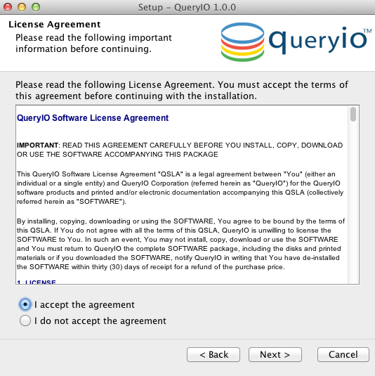
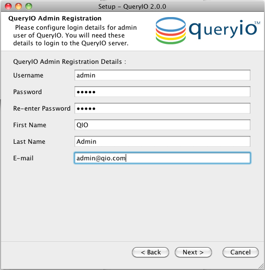
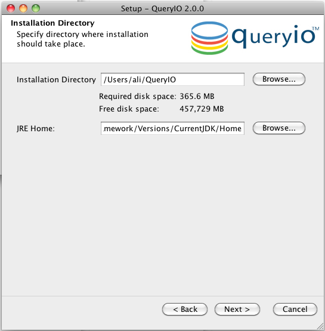
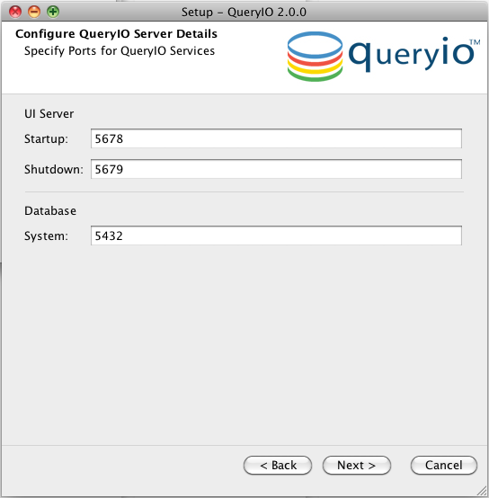
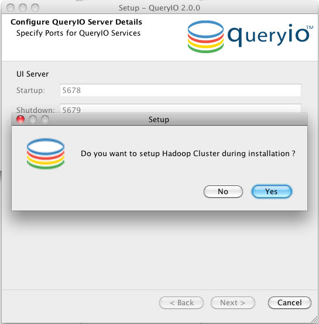
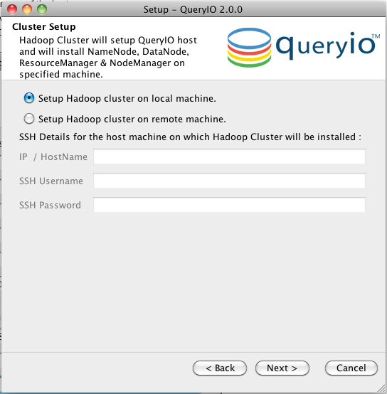
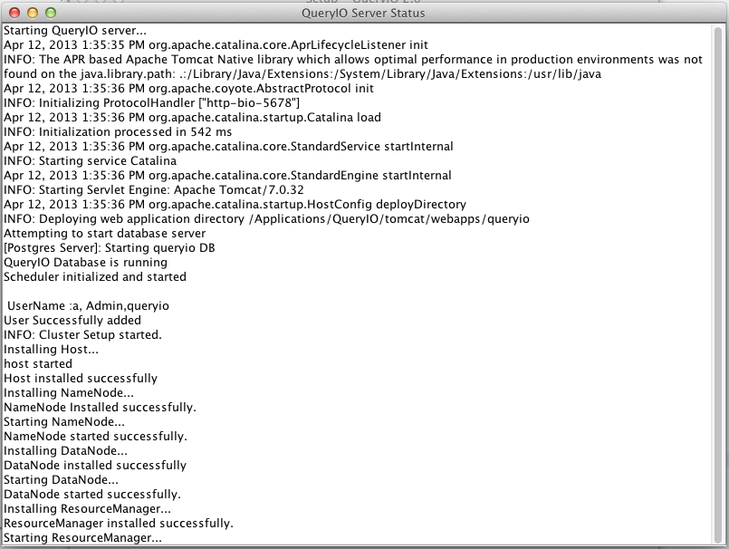
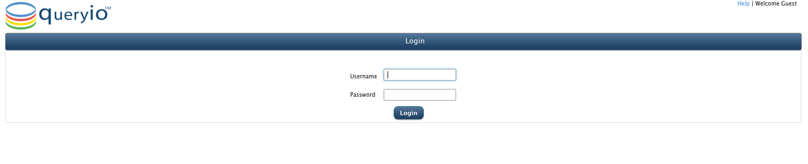
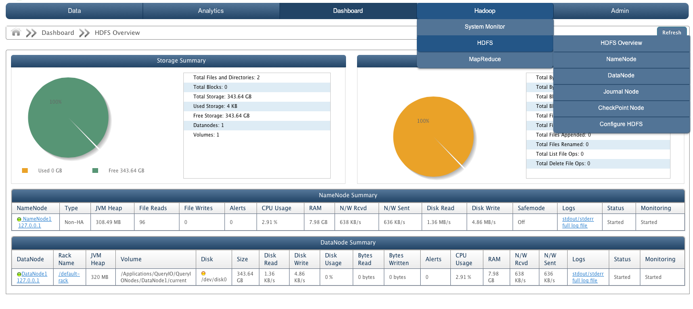

QueryIO: Big Data Analytics - Installation
In this chapter
This chapter explains how to install QueryIO on your system and configure Hadoop cluster along with it. When you install QueryIO, a number of components are installed, including Hadoop, databases, libraries, services, agents, etc.
Launch QueryIO installer by double-clicking on the downloaded executable file (e.g. QueryIO_v2_0_mac_x64.dmg or QueryIO_v2_0_0-linux.sh). A wizard will show up and take you through the installation process.
Introduction
-
Please go through the "Introduction" screen. This will brief you about the installation process and details about the QueryIO and its version that will be installed. Click on the "Next" button.
License Agreement

-
Please go through the "License Agreement for QueryIO". Accept the agreement to continue installation.
QueryIO Installation






-
QueryIO User Registration Details:
-
Provide details to create the administrator account. The username/password provided here will be required to access the services provided by QueryIO.
Using this account, you can manage your cluster and users.
-
Select Installation Path
-
Specify installation path for QueryIO.
-
To change the installation path, click on "Browse..." button and select a location for installation. Click on the "Next" button to proceed further.
-
JRE Home: QueryIO automatically detects the location of the installed JRE on your system. If you want to use a different JRE, specify the installation path for that JRE.
-
Configure QueryIO Server Details
-
Specify the QueryIO Server port settings. The QueryIO Services require following ports:
-
Startup and Shutdown port: Ports used by QueryIO UI server.
-
Database default port: Port for QueryIO database.
-
Click Next to proceed to cluster setup.
-
Automatic Hadoop Cluster Setup
-
QueryIO will prompt you to "Setup Hadoop cluster during installation".
-
This will install hadoop cluster on chosen machine and make all nodes automatically on that machine (on default ports).
-
Please select "Yes", if you want to setup Hadoop cluster automatically after installation has completed. You can also use QueryIO UI to setup Hadoop cluster later also.
-
Click No to complete setup without setting up Hadoop cluster.
-
Filling Hadoop Cluster Setup Form
-
Setup Hadoop Cluster on local machine : This option is basically for evaluation purpose. Selecting this option will install Hadoop cluster on your local system in $INSTALL_HOME directory.
-
Setup Hadoop Cluster on remote machine : This option allows you to setup cluster on any remote machine. You need to provide SSH credentials for the remote
machine.
-
SSH Details
-
HostName/IP: IP address or name of the host to be added.
-
Username: Username of the host.
-
Password: Password for account whose username was provided.
-
QueryIO will install the Hadoop cluster on specified machine and also install all the nodes automatically.
-
Click Next to start the installion process.
-
Installing
-
This tab displays the progress of the installation.
-
Installation Complete
-
You will be prompted when the installation is complete.
-
Select Start QueryIO Server check box to start QueryIO server automatically after installation is finished. You can start QueryIO server manually also.
-
Click on the Finish button.
Using QueryIO UI
Once QueryIO has successfully started, the installer will take you to login screen of QueryIO in default browser. Please provide login details as provided in the " User Registration Form" during installation.

You can see status of various nodes under Hadoop -> HDFS and Hadoop -> MapReduce tab from navigation menu.

Copyright © 2015 QueryIO Corporation. All Rights Reserved.
QueryIO, "Big Data Intelligence" and the QueryIO Logo are trademarks of QueryIO Corporation. Apache, Hadoop and HDFS are trademarks of The Apache Software Foundation.